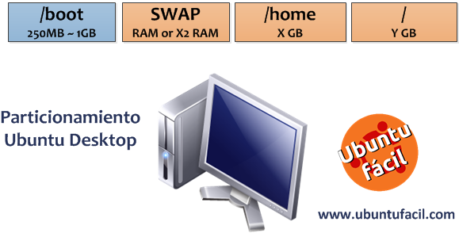
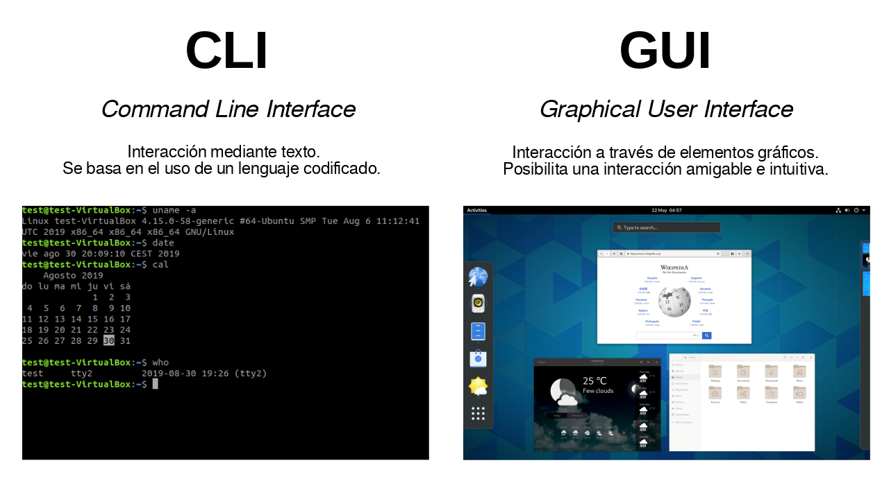

Sistemas Operativos Linux
Bienvenido al curso de Sistemas Operativos Linux. En este curso aprenderás los fundamentos del sistema operativo Linux, desde su instalación y configuración hasta la administración avanzada de usuarios, permisos y automatización de tareas mediante scripts.
Materiales Recomendados
1. Fundamentos del Sistema Operativo Linux
1.1. Historia y Filosofía de Linux
1.1.1. Historia del Sistema Operativo Unix y la Creación de Linux
Linux fue creado en 1991 por Linus Torvalds mientras era estudiante en la Universidad de Helsinki. Su desarrollo comenzó como un proyecto personal para crear un nuevo kernel de sistema operativo libre, inspirado en MINIX, una versión pequeña de UNIX.
El kernel de Linux se distribuyó inicialmente bajo su propia licencia, que tenía restricciones sobre actividades comerciales. Sin embargo, en 1992, el kernel se relicenció bajo la GNU General Public License (GPL), lo que permitió su distribución libre y comercial.
Unix creado en Bell Labs
Ken Thompson y Dennis Ritchie desarrollan UNIX en AT&T Bell Labs.
Proyecto GNU
Richard Stallman inicia el Proyecto GNU para crear un sistema operativo tipo Unix completamente libre.
Linux es creado
Linus Torvalds crea la primera versión del kernel Linux y la comparte en un grupo de noticias.
Primeras distribuciones
Aparecen las primeras distribuciones completas de Linux, incluyendo Slackware y Debian.
1.1.2. Filosofía del Software Libre y de Código Abierto
La filosofía del software libre y de código abierto es central en Linux. Promueve la libertad de usar, estudiar, modificar y distribuir el software. Esto fomenta la colaboración y la innovación, permitiendo a los desarrolladores de todo el mundo contribuir al software y mejorarlo constantemente.
1.1.3. Distribuciones de Linux: Diferencias y Similitudes
Existen numerosas distribuciones de Linux, cada una adaptada a diferentes necesidades. Algunas de las más populares incluyen Ubuntu, Fedora, Debian y CentOS. Aunque todas están basadas en el mismo núcleo (kernel) de Linux, varían en su gestión de paquetes, entorno de escritorio y herramientas preinstaladas.
1.2. Instalación y Configuración Inicial
1.3. Instalación
La instalación de Linux puede variar según la distribución, pero generalmente sigue estos pasos:
- Descargar la imagen ISO de la distribución deseada.
- Crear un medio de instalación (USB, DVD).
- Arrancar desde el medio de instalación.
- Seguir las instrucciones del instalador.
1.4. Medios de Instalación
USB
El método más común y conveniente para instalar Linux.
DVD
Una opción alternativa si no se dispone de un USB.
Red
Instalación a través de la red, útil para instalaciones masivas.
1.5. Instalación Paso a Paso de Diferentes Distribuciones
A continuación, se muestra un ejemplo de instalación de Ubuntu:
- Descargar la imagen ISO de Ubuntu desde su sitio oficial.
- Crear un USB de arranque con la herramienta Rufus.
- Arrancar desde el USB y seleccionar "Instalar Ubuntu".
- Seguir las instrucciones del instalador, seleccionando el idioma, la zona horaria, y creando una cuenta de usuario.
- Esperar a que finalice la instalación y reiniciar el sistema.
1.6.1. Selección de Particiones y Sistemas de Archivos
La selección de particiones y sistemas de archivos es crucial para el rendimiento y la organización del sistema. A continuación, se muestra un diagrama explicativo:
1.7. Configuración Básica del Sistema
Después de la instalación, es importante realizar algunas configuraciones básicas:
- Actualizar el sistema:
sudo apt update && sudo apt upgrade - Instalar controladores adicionales si es necesario.
- Configurar la zona horaria:
sudo dpkg-reconfigure tzdata
1.8. Configuración de la Red
La configuración de la red puede realizarse tanto para conexiones Ethernet como WiFi. A continuación, se muestra un ejemplo de configuración para cada tipo:
Configuración Ethernet
sudo nano /etc/network/interfaces
auto eth0
iface eth0 inet dhcpConfiguración WiFi
sudo nano /etc/wpa_supplicant/wpa_supplicant.conf
network={
ssid="nombre_de_red"
psk="contraseña"
}1.9. Configuración de Usuarios y Permisos
La gestión de usuarios y permisos en Linux es fundamental para la seguridad y organización del sistema. A continuación, se muestra una tabla comparativa de comandos y permisos:
| Comando | Descripción |
|---|---|
useradd |
Crear un nuevo usuario |
usermod |
Modificar un usuario existente |
userdel |
Eliminar un usuario |
chmod |
Cambiar permisos de archivos |
chown |
Cambiar propietario de archivos |
1.10. Gestión de Paquetes y Actualizaciones
En Linux, la gestión de paquetes se realiza mediante gestores de paquetes como APT, DNF, entre otros. A continuación, se muestran algunos ejemplos:
APT (Debian/Ubuntu)
sudo apt update
sudo apt install nombre_paqueteDNF (Fedora)
sudo dnf update
sudo dnf install nombre_paquete1.11. Comandos y Herramientas de la Línea de Comandos
La línea de comandos es una herramienta poderosa en Linux. A continuación, se muestran algunos comandos básicos con ejemplos:
| Comando | Descripción |
|---|---|
ls |
Listar archivos y directorios |
cd |
Cambiar de directorio |
cp |
Copiar archivos |
mv |
Mover o renombrar archivos |
rm |
Eliminar archivos |
1.12. Uso de la Terminal
La terminal es una interfaz de línea de comandos que permite interactuar con el sistema operativo. A continuación, se muestra una demostración visual de la terminal con ejemplos de comandos en ejecución:
1.14. Manipulación de Archivos y Directorios
La manipulación de archivos y directorios en Linux se realiza mediante comandos específicos. A continuación, se muestran algunos ejemplos:
| Comando | Descripción |
|---|---|
cp |
Copiar archivos |
mv |
Mover o renombrar archivos |
rm |
Eliminar archivos |
mkdir |
Crear directorios |
rmdir |
Eliminar directorios vacíos |
1.15. Visualización y Edición de Archivos
La visualización y edición de archivos en Linux se puede realizar mediante varios editores de texto. A continuación, se muestran algunos ejemplos:
| Comando | Descripción |
|---|---|
cat |
Mostrar el contenido de un archivo |
nano |
Editor de texto en la terminal |
vim |
Editor de texto avanzado en la terminal |
gedit |
Editor de texto gráfico |
2. Permisos y Propiedades en Linux
2.1. Procesos y Gestión de Recursos
En Linux, un proceso es una instancia de un programa en ejecución. Los procesos pueden ejecutarse en primer plano (foreground) o en segundo plano (background).
Procesos en Primer Plano y Segundo Plano
Los procesos en primer plano son aquellos que ocupan la terminal hasta que finalizan. Los procesos en segundo plano se ejecutan sin bloquear la terminal.
| Comando | Descripción |
|---|---|
ps |
Mostrar información sobre los procesos activos |
top |
Mostrar los procesos en ejecución en tiempo real |
htop |
Versión mejorada de top con interfaz interactiva |
kill |
Terminar un proceso por su ID |
Prioridades de Procesos
Las prioridades de los procesos determinan el orden en que el sistema operativo asigna
tiempo de CPU. Los comandos nice y renice se utilizan para
ajustar estas prioridades.
Uso de Recursos del Sistema
El comando ulimit se utiliza para limitar los recursos del sistema
disponibles para los procesos.
2.2. Administración de Usuarios y Grupos
En Linux, los usuarios y grupos son fundamentales para la gestión de permisos y la seguridad del sistema.
Tipos de Usuarios en Linux
Existen varios tipos de usuarios en Linux:
- root: El usuario administrador con todos los permisos.
- Usuario normal: Usuarios con permisos limitados.
- Usuario de sistema: Usuarios creados para ejecutar servicios específicos.
Comandos de Administración de Usuarios
| Comando | Descripción |
|---|---|
useradd |
Crear un nuevo usuario |
usermod |
Modificar un usuario existente |
userdel |
Eliminar un usuario |
groupadd |
Crear un nuevo grupo |
groupdel |
Eliminar un grupo |
usermod -aG |
Añadir un usuario a un grupo |
2.3. Gestión de Cuentas de Usuario
La gestión de cuentas de usuario incluye la configuración de contraseñas, la seguridad y la monitorización de sesiones activas.
Configuración de Cuentas de Usuario
| Comando | Descripción |
|---|---|
passwd |
Cambiar la contraseña de un usuario |
chage |
Gestionar la caducidad de la contraseña |
who |
Mostrar quién está conectado |
w |
Mostrar información sobre los usuarios conectados |
Seguridad en Contraseñas
Los archivos /etc/passwd y /etc/shadow contienen información
sobre las cuentas de usuario y sus contraseñas.
Comprobación de Sesiones Activas
| Comando | Descripción |
|---|---|
who |
Mostrar quién está conectado |
last |
Mostrar el historial de inicios de sesión |
2.4. Creación y Eliminación de Usuarios
La creación y eliminación de usuarios en Linux se realiza mediante comandos específicos con opciones avanzadas.
Comandos de Creación y Eliminación de Usuarios
| Comando | Descripción |
|---|---|
useradd |
Crear un nuevo usuario |
userdel |
Eliminar un usuario |
Permisos Predeterminados y Directorios /home
Al crear un usuario, se asignan permisos predeterminados y se crea un directorio en
/home para almacenar sus archivos personales.
2.5. Modificación de Cuentas de Usuario
2.5.1. Gestión de Contraseñas
La gestión de contraseñas incluye cambiar y caducar contraseñas utilizando comandos como
passwd y chage.
| Comando | Descripción |
|---|---|
passwd |
Cambiar la contraseña de un usuario |
chage |
Gestionar la caducidad de la contraseña |
2.5.2. Gestión de Grupos
La gestión de grupos incluye la creación, eliminación y modificación de grupos
utilizando comandos como groupadd, gpasswd y
groupdel.
| Comando | Descripción |
|---|---|
groupadd |
Crear un nuevo grupo |
gpasswd |
Administrar el archivo de contraseñas de grupo |
groupdel |
Eliminar un grupo |
2.5.3. Creación, Eliminación y Modificación de Grupos
Ejemplos prácticos de cómo crear, eliminar y modificar grupos en Linux.
# Crear un nuevo grupo
sudo groupadd desarrolladores
# Añadir un usuario a un grupo
sudo usermod -aG desarrolladores usuario
# Eliminar un grupo
sudo groupdel desarrolladores
2.6. Permisos y Propiedades de Archivos
Los permisos en Linux determinan quién puede leer, escribir o ejecutar un archivo. Los
permisos se representan mediante los caracteres rwx (lectura, escritura,
ejecución).
Comandos de Permisos y Propiedades
| Comando | Descripción |
|---|---|
ls -l |
Mostrar los permisos de los archivos |
chmod |
Cambiar los permisos de un archivo |
chown |
Cambiar el propietario de un archivo |
chgrp |
Cambiar el grupo de un archivo |
Sistema de Permisos en Números
Los permisos también se pueden representar mediante números. Por ejemplo,
chmod 755 asigna permisos de lectura, escritura y ejecución al propietario,
y permisos de lectura y ejecución al grupo y a otros.
Permisos Especiales
Los permisos especiales incluyen SUID, SGID y Sticky Bit, que proporcionan funcionalidades adicionales de seguridad.
# Asignar permisos SUID
sudo chmod u+s archivo
# Asignar permisos SGID
sudo chmod g+s directorio
# Asignar Sticky Bit
sudo chmod +t directorio
2.7. Control de Acceso y Seguridad
El control de acceso y la seguridad en Linux se pueden gestionar mediante ACLs (Listas de Control de Acceso) y PAM (Módulos de Autenticación Pluggable).
Uso de ACLs
| Comando | Descripción |
|---|---|
setfacl |
Establecer una ACL en un archivo o directorio |
getfacl |
Mostrar las ACLs de un archivo o directorio |
Seguridad en Archivos y Directorios
La seguridad en archivos y directorios se puede mejorar mediante el uso de permisos adecuados y la configuración de ACLs.
Bloqueo de Cuentas y Restricciones con PAM
PAM permite configurar políticas de autenticación y restricciones de acceso.
2.8. Ejemplos Prácticos y Casos de Uso
A continuación, se presentan algunos casos de uso reales sobre la administración de usuarios y permisos en Linux.
Combinaciones de Permisos Avanzadas
# Crear un directorio con permisos específicos
mkdir proyecto
chmod 770 proyecto
# Asignar permisos de lectura y escritura a un archivo
touch archivo.txt
chmod 660 archivo.txt
# Asignar permisos de ejecución a un script
touch script.sh
chmod 750 script.sh
3. Automatización de Tareas y Scripts en Linux
3.1. Uso de Shell Script
Los scripts en Linux permiten automatizar tareas repetitivas y complejas. A diferencia de los comandos manuales, los scripts pueden ejecutar múltiples comandos de manera secuencial y sin intervención del usuario.
Creación de Scripts Básicos
Un script básico en Linux comienza con la línea #!/bin/bash, que indica que
el script debe ejecutarse con el intérprete de Bash.
# Crear un script básico
#!/bin/bash
echo "Hola, mundo!"
Cómo Ejecutar un Script
Para ejecutar un script, primero se debe dar permisos de ejecución con
chmod +x script.sh y luego ejecutarlo con ./script.sh.
# Dar permisos de ejecución
chmod +x script.sh
# Ejecutar el script
./script.sh
3.2. Escritura de Scripts en Bash
La estructura de un script Bash incluye variables, parámetros y argumentos que permiten personalizar y controlar la ejecución del script.
Variables en Bash
Las variables en Bash se definen sin espacios alrededor del signo igual y se accede a ellas anteponiendo el signo dólar.
# Definir y usar variables
nombre="Matías"
echo "Hola, $nombre"
Parámetros y Argumentos
Los parámetros y argumentos permiten pasar información al script desde la línea de comandos.
# Usar parámetros y argumentos
#!/bin/bash
echo "El primer argumento es $1"
echo "El número de argumentos es $#"
Ejemplo de un Script Básico de Automatización
# Script para crear un directorio y un archivo
#!/bin/bash
mkdir $1
touch $1/$2
echo "Directorio y archivo creados"
3.3. Uso de Variables, Estructuras de Control y Funciones
Los scripts en Bash pueden incluir variables, estructuras de control y funciones para realizar tareas complejas.
Definición y Uso de Variables
# Definir y usar variables
mensaje="Hola, mundo!"
echo $mensaje
Uso de if, else, elif
# Uso de if, else, elif
#!/bin/bash
if [ $1 -gt 10 ]; then
echo "El número es mayor que 10"
elif [ $1 -eq 10 ]; then
echo "El número es igual a 10"
else
echo "El número es menor que 10"
fi
Bucles for, while y until
# Uso de bucles for, while y until
#!/bin/bash
for i in {1..5}; do
echo "Número $i"
done
contador=1
while [ $contador -le 5 ]; do
echo "Contador $contador"
((contador++))
done
contador=1
until [ $contador -gt 5 ]; do
echo "Contador $contador"
((contador++))
done
Creación de Funciones en Bash
# Definir y usar funciones
#!/bin/bash
function saludar {
echo "Hola, $1!"
}
saludar "Matías"
Ejemplo Práctico de un Script con Condiciones y Bucles
# Script para verificar si un archivo existe y contar líneas
#!/bin/bash
if [ -f $1 ]; then
echo "El archivo $1 existe"
lineas=$(wc -l < $1)
echo "El archivo tiene $lineas líneas"
else
echo "El archivo $1 no existe"
fi
3.4. Tareas Programadas con Cron
Cron es una herramienta que permite programar la ejecución de comandos y scripts en intervalos de tiempo específicos.
Formato de las Tareas Programadas
Las tareas programadas en cron se definen en el archivo crontab con el siguiente formato:
# Formato de crontab
* * * * * comando
# Minuto, Hora, Día del Mes, Mes, Día de la Semana
Ejemplos de Configuración
# Editar crontab
crontab -e
# Ejecutar un script cada día a las 2 AM
0 2 * * * /ruta/al/script.sh
# Ejecutar un comando cada lunes a las 8 AM
0 8 * * 1 /ruta/al/comando
Administración de Tareas Programadas
# Listar tareas programadas
crontab -l
# Eliminar todas las tareas programadas
crontab -r
Seguridad y Permisos en Cron
Es importante configurar adecuadamente los permisos y la seguridad en cron para evitar la ejecución no autorizada de tareas.
3.5. Gestión de Tareas con at y batch
Las herramientas at y batch permiten programar la ejecución de
tareas en momentos específicos o cuando la carga del sistema es baja.
Uso de at
# Programar una tarea con at
echo "comando" | at 14:00
# Verificar tareas programadas
atq
# Eliminar una tarea programada
atrm
Uso de batch
# Programar una tarea con batch
echo "comando" | batch
# Verificar tareas programadas
atq
Ejemplos Prácticos de Ejecución de Tareas con at y batch
# Programar un script para ejecutarse a las 3 PM
echo "/ruta/al/script.sh" | at 15:00
# Programar un comando para ejecutarse cuando la carga del sistema es baja
echo "comando" | batch
3.6. Manejo de Logs y Errores en Scripts
La redirección de salida y el manejo de logs son esenciales para monitorear y depurar scripts en Linux.
Redirección de Salida
# Redirigir salida estándar y errores
comando > archivo.log
comando >> archivo.log
comando 2> errores.log
comando 2>> errores.log
Uso de tee
# Visualizar y registrar logs
comando | tee archivo.log
comando | tee -a archivo.log
Creación de Registros de Ejecución con logger
# Registrar mensajes en el syslog
logger "Mensaje de log"
3.7. Casos Prácticos de Automatización
A continuación, se presentan algunos ejemplos prácticos de scripts de automatización en Linux.
Script para Realizar Copias de Seguridad Automáticas
# Script para realizar copias de seguridad
#!/bin/bash
fecha=$(date +%Y%m%d)
tar -czf /ruta/a/copias/backup_$fecha.tar.gz /ruta/a/directorio
echo "Copia de seguridad realizada"
Script para Monitorear el Estado del Sistema
# Script para monitorear el estado del sistema
#!/bin/bash
echo "Estado del sistema:"
echo "Uptime:"
uptime
echo "Espacio en disco:"
df -h
echo "Memoria libre:"
free -m
Script para Limpiar Archivos Temporales
# Script para limpiar archivos temporales
#!/bin/bash
find /tmp -type f -delete
echo "Archivos temporales eliminados"